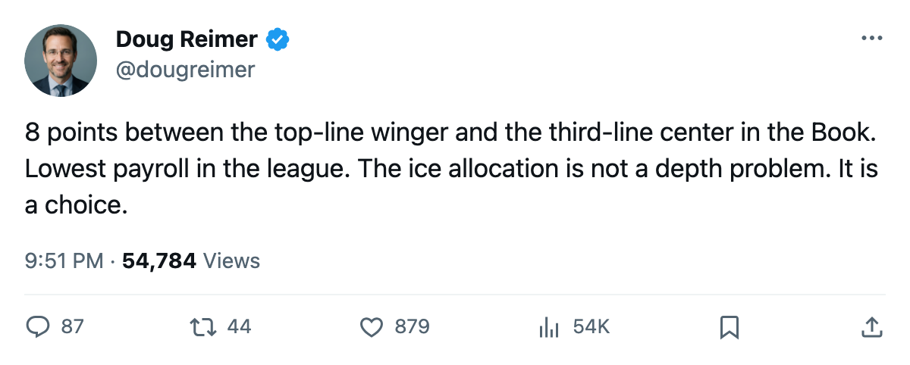
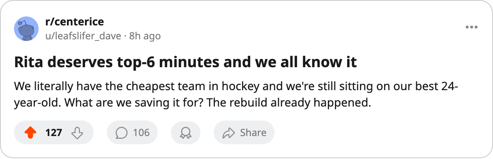

The Lowest Payroll in Hockey Has 2 Forwards Rated Above Its Top-Line Right Wing and Neither Plays a Top-6 Wing Role
Jani Rita sits 8 points above Ethan Moreau in the Book. The Index has him at +8. He plays third-line center and fourth-line wing.
 Doug ReimerAnalytics editor, ex-video coach · The Slot Report
Doug ReimerAnalytics editor, ex-video coach · The Slot Report
The piece
 Jani Rita77 carries an 83 in the Bureau's Book at left wing.
Jani Rita77 carries an 83 in the Bureau's Book at left wing.  Ethan Moreau69 carries a 75 and starts on
Ethan Moreau69 carries a 75 and starts on  Edmonton Oilers's first line at the same position. Rita's even-strength slots read fourth-line wing and third-line center. His special-teams slot is the second power-play unit.
Edmonton Oilers's first line at the same position. Rita's even-strength slots read fourth-line wing and third-line center. His special-teams slot is the second power-play unit.  Brad Isbister74, at 79, plays fourth-line center and first-unit penalty kill.
Brad Isbister74, at 79, plays fourth-line center and first-unit penalty kill.
Both men rate above Moreau at his position. The desk's mis-slot method flags a third- or fourth-liner whose overall exceeds a top-six player at the same position. Edmonton produces two hits at left wing.
| Player | Position | Overall | Even strength | Special teams |
|---|---|---|---|---|
| Ethan Moreau | LW | 75 | L1RW | — |
| Jani Rita | LW | 83 | L3C_, 42LW | P2LW |
| Brad Isbister | LW | 79 | L4C_ | K1C_ |
The payroll makes the allocation hard to defend
Edmonton Oilers carries $42.61M, the lowest payroll in the league. That produces $10.65M per point against 4 points in 6 games, 13th in the West. The gap between what they spend and what they get is not the worst in the league;  Phoenix Coyotes sits at $27.70M per point. But a team with the least money in hockey has the least room to waste a rated asset on the fourth line.
Phoenix Coyotes sits at $27.70M per point. But a team with the least money in hockey has the least room to waste a rated asset on the fourth line.
Rita's base sits at 76. His current overall reads 83. He is 24 years old. The Development Index has him at +8, tied for the 14th-biggest riser in the league. He has 2 points in 6 games. The coach has him at 42LW and L3C_ on even strength and P2LW on the power play. That is 3 line-center shifts, fourth-line wing, and the second unit. A man rated 8 above the player starting on the first line.
The top two lines are carrying the load
 Ryan Smyth82 has 9 points in 6 games at 88 overall and 23.0 minutes a night.
Ryan Smyth82 has 9 points in 6 games at 88 overall and 23.0 minutes a night.  Mike Comrie80 has 8 points at 86 overall and 22.8 minutes.
Mike Comrie80 has 8 points at 86 overall and 22.8 minutes.  Ales Hemsky77 is +9 on the Index, base 75 now 83, with 4 points in 6 games at 22 years old. The first and second lines are producing.
Ales Hemsky77 is +9 on the Index, base 75 now 83, with 4 points in 6 games at 22 years old. The first and second lines are producing.
The problem sits one step below. Moreau at 75 is the first-line right winger. Rita at 83 plays two lines below him. That is an 8-point spread in the Book sitting on the third and fourth lines. Isbister at 79 adds another 4-point gap above the same man.
The club's top-6 by overall, read from the Book: Smyth (88), Comrie (86), Hemsky (83), Rita (83). The top four rated forwards on the roster. Three of them get top-six minutes. The fourth plays third-line center and fourth-line wing.

What the slot sheet actually shows
The coach is using Rita and Isbister at center on the bottom two lines. That is the choice. But the mis-slot flag is at left wing because that is their rated position, and the rated position is what determines whether a man should be on the first line or the fourth.
Moreau at 75 is a 30-year-old first-line winger who gets the defensive assignments and the tough matchups. The problem is allocation: Moreau gets the wing minutes while Rita, at 83 and 8 points higher in the Book, plays third-line center and fourth-line wing. The Book says Rita is better at the wing. The slot sheet says Moreau gets the wing minutes.
 Shawn Horcoff63 sits at 72 morale, the 2nd-lowest in the league, on $0.60M with 0 years left and a 69 in the Book. Edmonton's morale average is 90.5, ninth in the league, which means the discontent is concentrated. The two men the Index says are rising play bottom-six roles. The man the Book rates at 69 plays every night with a contract expiring and a morale number that puts him on the league's basement list.
Shawn Horcoff63 sits at 72 morale, the 2nd-lowest in the league, on $0.60M with 0 years left and a 69 in the Book. Edmonton's morale average is 90.5, ninth in the league, which means the discontent is concentrated. The two men the Index says are rising play bottom-six roles. The man the Book rates at 69 plays every night with a contract expiring and a morale number that puts him on the league's basement list.
Edmonton plays  San Jose Sharks at home today. The sheet does not say whether the coach moves Rita up. It says that if he stays where he is, the 8-point gap stays where it is too, and $42.61M keeps buying 4 points.
San Jose Sharks at home today. The sheet does not say whether the coach moves Rita up. It says that if he stays where he is, the 8-point gap stays where it is too, and $42.61M keeps buying 4 points.

